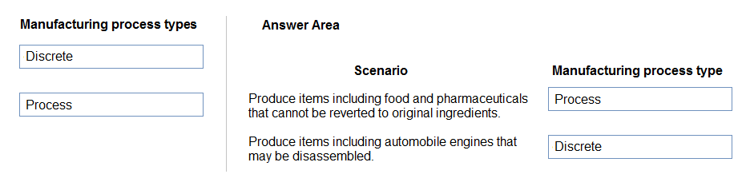
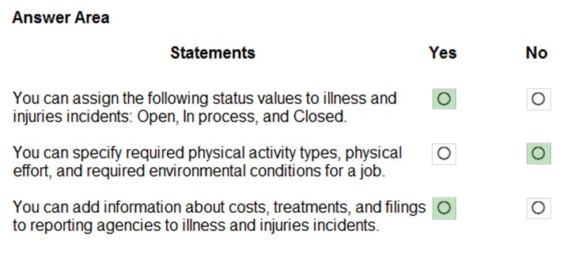

Microsoft Dynamics 365 Fundamentals (ERP) Certification (MB-920) Exam Questions
Attention
The questions in this website is a collection of free available resources from several sources. The use of any parts for commercial use is strictly prohabit. For personnal use only.
Question 1
A company plans to implement Dynamics 365 Supply Chain Management.
Match each manufacturing strategy to its definition.
To answer, drag the appropriate manufacturing strategy from the column on the left to its definition on the right. Each manufacturing strategy may be used once, more than once, or not at all.
NOTE: Each correct selection is worth one point.
Select and Place:
Answer 1
Reference:
Question 2
HOTSPOT -
A company uses Dynamics 365 Supply Chain Management. The company plans to implement Asset Management.
Instructions: For each of the following statements, select Yes if the statement is true. Otherwise, select No.
NOTE: Each correct selection is worth one point.
Hot Area:
Answer 2
Reference:
https://docs.microsoft.com/en-us/dynamics365/supply-chain/asset-management/objects/multi-level-objects https://docs.microsoft.com/en-us/dynamics365/supply-chain/asset-management/objects/create-an-object
Question 3
HOTSPOT -
A company is evaluating Dynamics 365 Supply Chain Management.
For each of the following statements, select Yes if the statement is true. Otherwise, select No.
NOTE: Each correct selection is worth one point.
Hot Area:
Answer 3
Reference:
https://docs.microsoft.com/en-us/dynamics365/supply-chain/production-control/subcontracting
Question 4
DRAG DROP -
A company plans to implement Dynamics 365 Supply Chain Management.
You need to recommend manufacturing process types for the company.
What should you recommend? To answer, drag the appropriate manufacturing process types to the correct scenarios. Each manufacturing process type may be used once, more than once, or not at all. You may need to drag the split bar between panes or scroll to view content.
NOTE: Each correct selection is worth one point.
Select and Place:
Answer 4

Reference:
https://docs.microsoft.com/en-us/learn/modules/get-started-production-control-dyn365-supply-chain-mgmt/7-process-manufacturing https://adeelkhanaxian.wordpress.com/2020/09/22/process-manufacturing-vs-discrete-manufacturing/
Question 5
A company plans to implement Dynamics 365 Supply Chain Management.
The company wants shop floor workers to register their daily work by using the production floor execution interface.
Which two activities can employees perform by using the tool? Each correct answer presents a complete solution.
NOTE: Each correct selection is worth one point. (2 answers)
A. Schedule a production order.
B. Register scrap quantity during production.
C. Register raw material consumption.
D. Clock in and clock out.
Answer 5
Correct Answer: B and D
Reference:
https://docs.microsoft.com/en-us/dynamics365/supply-chain/production-control/production-floor-execution-configure https://docs.microsoft.com/en-us/dynamics365/supply-chain/production-control/production-floor-execution-use
Question 6
HOTSPOT -
A company uses Dynamics 365 Supply Chain Management.
Instructions: For each of the following statements, select Yes if the statement is true. Otherwise, select No.
NOTE: Each correct selection is worth one point.
Hot Area:
Answer 6
Reference:
https://docs.microsoft.com/en-us/dynamics365/supply-chain/production-control/formulas-versions
Question 7
A candle manufacturing company plans to use Dynamics 365 Supply Chain Management. The proportions of ingredients differ for each finished product.
You need to recommend a manufacturing type for the company.
Which type of manufacturing should the company implement? (1 answer)
A. Process
B. Lean
C. Discrete
Answer 7
Correct Answer: A
Reference:
Question 8
HOTSPOT -
A company plans to use Dynamics 365 Supply Chain Management.
Instructions: For each of the following statements, select Yes if the statement is true. Otherwise, select No.
NOTE: Each correct selection is worth one point.
Hot Area:
Answer 8
Reference:
Question 9
HOTSPOT -
A company uses Dynamics 365 Supply Chain Management. The company wants to use SharePoint to manage documents from Supply Chain Management.
Instructions: For each of the following statements, select Yes if the statement is true. Otherwise, select No.
NOTE: Each correct selection is worth one point.
Hot Area:
Answer 9
Reference:
https://docs.microsoft.com/en-us/power-platform/admin/configure-server-based-authentication-sharepoint-on-premises https://docs.microsoft.com/en-us/power-platform/admin/manage-documents-using-sharepoint
Question 10
Topic 1
An organization has two legal entities. Items may be sold by one company only or by both companies.
You need to recommend a solution to standardize the items across the legal entities.
What should you recommend? (2 answers)
A. Lifecycle Services
B. Item templates
C. Products and product masters
D. Product Insights
Answer 10
Correct Answer: C
Reference:
Question 11
HOTSPOT -
A company uses Dynamics 365 Finance.
For each of the following statements, select Yes if the statement is true. Otherwise, select No.
NOTE: Each correct selection is worth one point.
Hot Area:
Answer 11
Reference:
Question 12
HOTSPOT -
A company uses Dynamics 365 Finance.
Instructions: For each of the following statements, select Yes if the statement is true. Otherwise, select No.
NOTE: Each correct selection is worth one point.
Hot Area:
Answer 12
Reference:
https://docs.microsoft.com/en-us/dynamics365/supply-chain/procurement/tasks/create-purchase-return-order https://docs.microsoft.com/en-us/dynamics365/finance/accounts-payable/create-vendor-payments-payment-proposal
Question 13
HOTSPOT -
You are evaluating expense management capabilities in Dynamics 365 Finance.
Instructions: For each of the following statements, select Yes if the statement is true. Otherwise, select No.
NOTE: Each correct selection is worth one point.
Hot Area:
Answer 13
Reference:
https://docs.microsoft.com/en-us/dynamics365/project-operations/prod-exp/intercompany-expense https://docs.microsoft.com/en-us/dynamics365/project-operations/prod-exp/expense-management-mobile-workspace
Question 14
HOTSPOT -
A company plans to implement Dynamics 365 Finance as their financial system. The company needs to know which features the system supports.
For each of the following statements, select Yes if the statement is true. Otherwise, select No.
NOTE: Each correct selection is worth one point.
Hot Area:
Answer 14
Reference:
https://docs.microsoft.com/en-us/dynamics365/fin-ops-core/dev-itpro/sysadmin/tasks/set-up-segregation-duties https://docs.microsoft.com/en-us/dynamics365/fin-ops-core/dev-itpro/analytics/financial-reporting-intro
Question 15
A company implements Dynamics 365 Finance.
Which two components can you use to create a financial dimension set?
Each correct answer presents part of the solution.
NOTE: Each correct selection is worth one point. (2 answers)
A. Derived dimension
B. Financial dimension
C. Main account
D. Account structure
Answer 15
Correct Answer: B and C
Reference:
https://docs.microsoft.com/en-us/dynamicsax-2012/appuser-itpro/create-a-financial-dimension-set
Question 16
Topic 1
HOTSPOT -
A company is implementing expense management capabilities in Dynamics 365 Finance.
Instructions: For each of the following statements, select Yes if the statement is true. Otherwise, select No.
NOTE: Each correct selection is worth one point.
Hot Area:
Answer 16
Reference:
http://d365tour.com/en/microsoft-dynamics-d365o/trade-logistics-d365fo-en/cash-advance/ https://docs.microsoft.com/en-us/dynamics365/project-operations/prod-exp/manage-expense-delegation
Question 17
Topic 1
A company using Dynamics 365 Finance has determined they have been paying for products they did not receive.
You need to recommend a solution to prevent this from happening in the future.
What should you recommend? (1 answer)
A. Implement Accounts payable for three-way matching.
B. Activate change management.
C. Implement Accounts receivable for three-way matching.
D. Use the Vendor portal.
Answer 17
Correct Answer: A
Reference:
Question 18
DRAG DROP -
An organization consisting of several companies is implementing Dynamics 365 Finance. The organization views company and department data by geographical regions and business functions.
You need to recommend organization types for the company based on the requirements.
What should you recommend? To answer, drag the appropriate organization types to the correct scenarios. Each organization type may be used once, more than once, or not at all. You may need to drag the split bar between panes or scroll to view content.
NOTE: Each correct selection is worth one point.
Select and Place:
Answer 18
Reference:
Question 19
HOTSPOT -
A company plans to implement Dynamics 365 Finance. The company wants to be able to perform the following actions:
- Calculate aged balances by customer.
- Create customer invoices that are not related to sales orders.
You need to explore accounting solutions for these business requirements.
What should you recommend? To answer, select the appropriate options in the answer area.
NOTE: Each correct selection is worth one point.
Hot Area:
Answer 19
Reference:
https://docs.microsoft.com/en-us/dynamics365/finance/accounts-receivable/collections-credit-accounts-receivable https://docs.microsoft.com/en-us/dynamicsax-2012/appuser-itpro/about-customer-invoices-free-text-invoices-and-pro-forma-invoices
Question 20
An international services company is implementing Dynamics 365 Finance.
You need to help the implementation team set up the app.
What must be created and configured first? (1 answer)
A. Business unit
B. Chart of accounts
C. Project
D. Legal entity
Answer 20
Correct Answer: B
Reference:
https://docs.microsoft.com/en-us/learn/modules/configure-chart-accounts-dyn365-finance/
Question 21
HOTSPOT - A company uses Dynamics 365 Finance. Instructions: For each of the following statements, select Yes if the statement is true. Otherwise, select No. NOTE: Each correct selection is worth one point. Hot Area:
Answer 21
Reference:
Question 22
DRAG DROP - A company implements Dynamics 365 Finance. You need to recommend features that the company can use for integrated reporting scenarios. Which feature should you recommend? To answer, drag the appropriate features to the correct scenarios. Each feature may be used once, more than once, or not at all. You may need to drag the split bar between panes or scroll to view content. NOTE: Each correct selection is worth one point. Select and Place:
Answer 22
Reference:
Question 23
HOTSPOT - A company plans to implement Dynamics 365 Commerce. Instructions: For each of the following statements, select Yes if the statement is true. Otherwise, select No. NOTE: Each correct selection is worth one point. Hot Area:
Answer 23
Reference:
https://docs.microsoft.com/en-us/dynamics365/commerce/channels-overview https://docs.microsoft.com/en-us/dynamics365/commerce/mpos-or-cpos
MPOS is only available offline for the Windows version. The iOS and Android versions do not support offline mode.
Question 24
HOTSPOT - A company plans to implement Dynamics 365 Commerce. Some products must only be available in specific physical stores due to product weight and physical measurements. You need to recommend a solution to meet the requirement. What should you recommend? To answer, select the appropriate option in the answer area. Hot Area:
Question 25
HOTSPOT - A customer wants to implement Dynamics 365 Human Resources to manage employee benefits. For each of the following statements, select Yes if the statement is true. Otherwise, select No. NOTE: Each correct selection is worth one point. Hot Area:
Answer 25
Work Schedule and Working time are not the same thing. Work Schedules are used in Project Operations to estimate the time required to complete a task, whereas Working time in HR identifies working days in a calendar year (i.e. exc Bank holidays or national holidays) A working time calendar is created in Organisation Administration & shows your (organisations) days and hours of operation & closure. If you have locations in multiple countries and regions, you might want to set up a working time calendar for each area. A work schedule however, is created in Resource Management
Reference:
https://docs.microsoft.com/en-us/dynamics365/human-resources/
Question 26
DRAG DROP - A manufacturer uses Dynamics 365 Human Resources and Microsoft HoloLens to augment manufacturing tasks. The company promotes five employees to a newly created position named quality assurance manager. You need to use Dynamics 365 functionality to facilitate self-education and apply continuous improvement to the process. What should you implement? To answer, drag the appropriate features to the correct requirements. Each feature may be used once, more than once, or not at all. You may need to drag the split bar between panes or scroll to view content. NOTE: Each correct selection is worth one point. Select and Place:
Answer 26
Reference:
Question 27
A company implements the performance management feature in Dynamics 365 Human Resources. Which performance management component can employees create by using the Employee Self-Service workspace? (1 answer)
A. Goals
B. Workflows
C. Performance reviews
D. Performance Journal
Answer 27
Suggested Answer: D
Reference:
Question 28
HOTSPOT - A company plans to implement Dynamics 365 Human Resources. Instructions: For each of the following statements, select Yes if the statement is true. Otherwise, select No. NOTE: Each correct selection is worth one point. Hot Area:
Answer 28

Suggested Answer: Yes, Yes, Yes
Reference:
Question 29
Answer 29
Question 30
Answer 30
Question 31
Answer 31
Question 32
HOTSPOT - A company plans to implement Dynamics 365 Project Operations. You need to recommend a capability that meets each requirement. Which capability should you recommend? To answer, select the appropriate option in the answer area. NOTE: Each correct selection is worth one point. Hot Area:

Answer 32
Reference:
https://docs.microsoft.com/en-us/dynamics365/project-operations/psa/project-stages
Question 33
HOTSPOT - A company plans to implement Dynamics 365 Project Operations. Instructions: For each of the following statements, select Yes if the statement is true. Otherwise, select No. NOTE: Each correct selection is worth one point. Hot Area:
Answer 33
Reference:
https://docs.microsoft.com/en-us/dynamics365/project-operations/prod-pma/project-contracts
Question 34
A company manufactures custom medications. You need to recommend a Dynamics 365 app that allows the company to manage the concentration of specific active ingredients, provide traceability of ingredients from supplier to customer, and substitute ingredients based on compound type. What should you recommend? (1 answer)
A. Dynamics 365 Supply Chain Management
B. Dynamics 365 Product Insights
C. Dynamics 365 Customer Service
D. Dynamics 365 Asset Management
Answer 34
Suggested Answer: A
Reference:
Question 35
DRAG DROP - A company plans to implement enterprise asset management. You need to recommend solutions for the company. What should you recommend? To answer, drag the appropriate solutions to the correct requirements. Each solution may be used once, more than once, or not at all. You may need to drag the split bar between panes or scroll to view content. NOTE: Each correct selection is worth one point. Select and Place:
Question 36
Answer 36
Question 37
Answer 37
Question 38
HOTSPOT - A retailer plans to award its customers based on the amount of money they spend. The retailer has not previously offered a customer reward program. You need to recommend a method for tracking customer spending. What should you recommend? To answer, select the appropriate options in the answer area. NOTE: Each correct selection is worth one point. Hot Area:
Answer 38
Reference:
https://docs.microsoft.com/en-us/dynamics365/commerce/set-up-customer-loyalty-program
Question 39
A retailer sells products by using an e-commerce site, brick and mortar stores, and phone sales. Different processes are used for each type of order source. You need to ensure that you can support each type of sale. What should you recommend? (1 answer)
A. case management and loyalty programs
B. a mobile app and online sales
C. a retail store, an online store, and a call center
D. a mobile app and a credit card gateway
Answer 39
Suggested Answer: C
Reference:
https://docs.microsoft.com/en-us/dynamics365/commerce/channel-setup-online
Question 40
Answer 40
Question 41
Answer 41
Question 42
A company wants to use sales, resourcing, project management, and expense tracking in a single application. What should the company implement? (1 answer)
A. Dynamics 365 Project Operations
B. Dynamics 365 Finance
C. Dynamics 365 Business Central
D. Dynamics 365 Human Resources
Answer 42
Suggested Answer: A
Reference:
Question 43
Answer 43
Question 44
HOTSPOT - A company implements Dynamics 365 finance and operations apps. You need to describe the shared features that are available to technical and business users to company stakeholders. Instructions: For each of the following statements, select Yes if the statement is true. Otherwise, select No. NOTE: Each correct selection is worth one point. Hot Area:
Answer 44
Reference:
Question 45
Answer 45
Question 46
DRAG DROP - You use Dynamics 365 Customer Service. You plan to configure service-level agreements (SLAs) for cases. Which feature should you use? To answer, drag the appropriate features to the correct scenarios. Each feature may be used once, more than once, or not at all. You may need to drag the split bar between panes or scroll to view content NOTE: Each correct selection is worth one point. Select and Place:
Answer 46
Reference:
https://docs.microsoft.com/en-us/dynamics365/customer-service/define-service-level-agreements